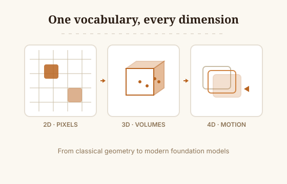

Comprehensive Coverage
The survey spans the full arc of spatial intelligence, from classical geometry and camera models to the modern foundation-model era. Representations are treated as one connected family rather than separate silos: 2D image-level understanding, 3D scene-level reconstruction, and 4D space-time modeling are each given their own chapter while sharing a common vocabulary for pose, depth, and structure. Perception, reasoning, and generation are covered in equal depth, so the reader can follow a single thread from pixels to physically grounded action.